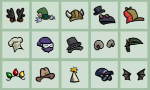
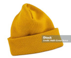
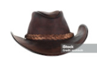
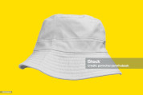

Wear them, style them, display them,
base them. Hats are good for many if not
all occasions.

Our top trending hats.

The iconic beanie. always in
style and suitable for the anxious type.
The iconic snapback. For those
in the look for looking pimp.

The iconic cowboy hat. Why work
hard when you can just wear one of these and
tell stories about the prairie.

The iconic bucket hat. For any
situation such as skateboarding, fishing,
on the beach, or just getting ice cream at the
gas station.
These hats are amazing! I've bought
four different styles and they all
come with the same decent quality and
uniqueness. I used to be ridiculed all
the time from everyone about my style
and now i'm the hippest cat in my office.
Thank you, Hat Inc.!
-Mark Lizardberg
Last Chance!
Want this month's top picks for
hats to wear to a funeral? Sign
up now!